Let the AI play a night, or pick Easy AI Win for a guaranteed clear. AI runs stay off the leaderboard. Record and share full nights.
Fixed the Windows launch error. Added office ambience and distant sounds.
Six nights, controller support, and a 6 AM results screen.